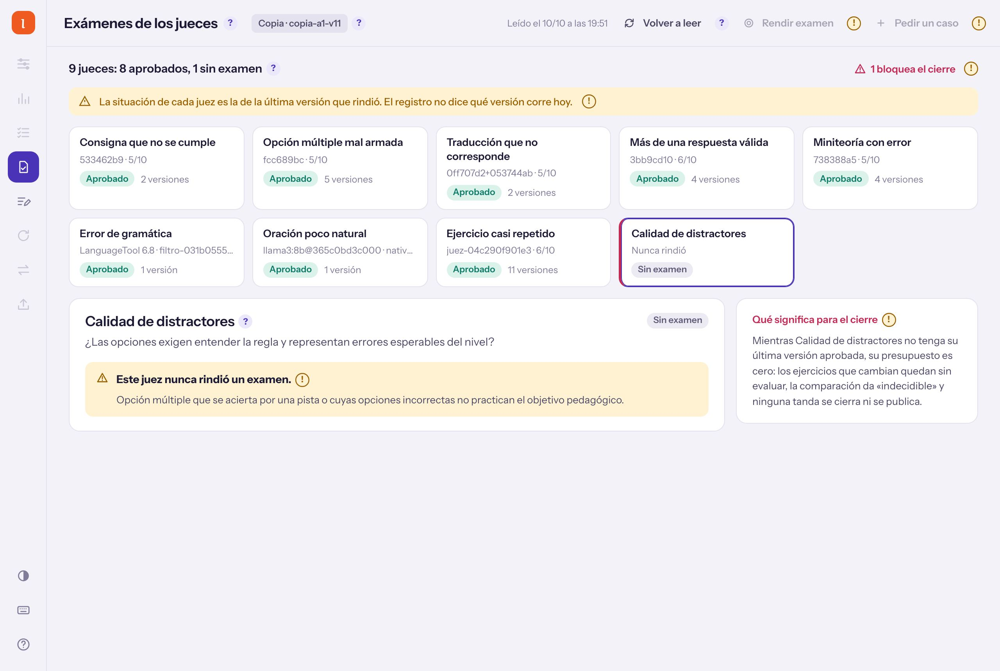
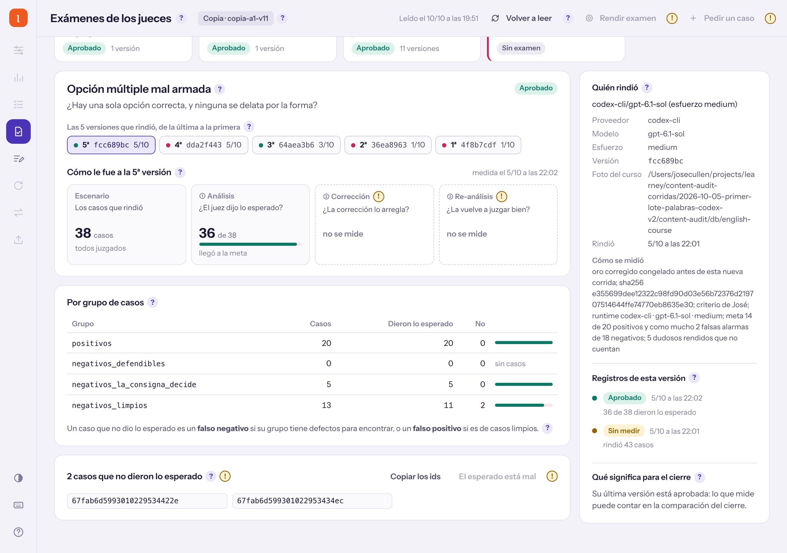
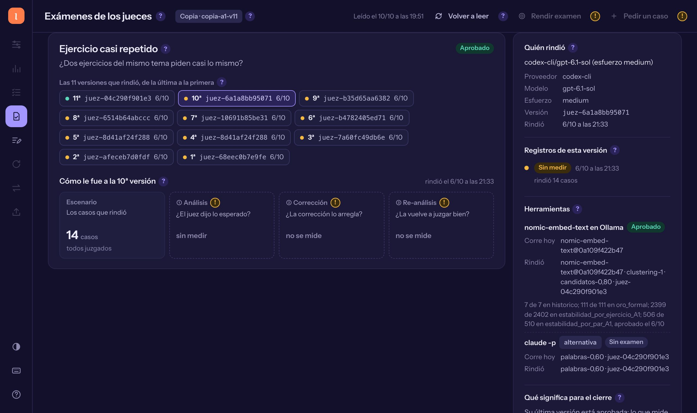
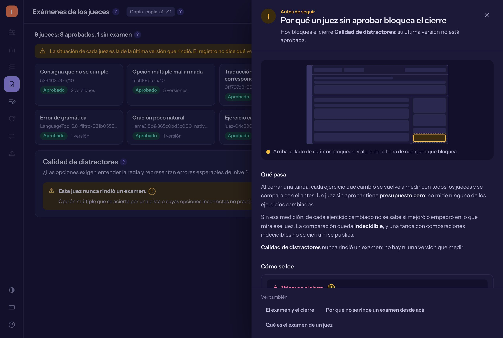
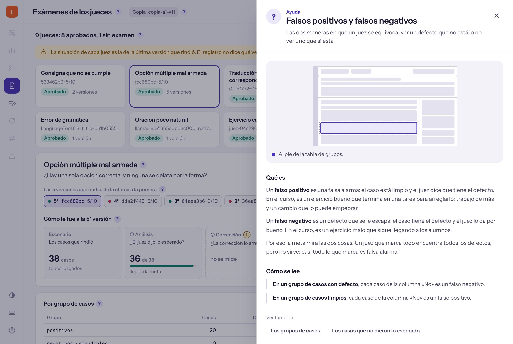

094ResumenDashboard de content-audit, después del brief 089 · 10/10/2026
Exámenes ya anda en HTML y muestra qué juez frena el cierre
Cómo se ve sobre una copia de a1-v11, qué no hace, qué datos faltan y qué conviene subir al andamio.
Exámenes anda en HTML sobre una copia: cada juez con su examen y el que frena el cierre (hoy, Calidad de distractores). Sólo lee; para entrar a master necesito tu OK en dos ramas.
De un vistazo, qué juez frena el cierre

Copia de a1-v11: 9 jueces, 8 aprobados y 1 que nunca rindió
El examen de un juez son casos congelados con la respuesta esperada. Un juez sin aprobar no mide los ejercicios que cambian, y ninguna tanda se cierra.
Cada versión, con sus casos y lo que no dio

Opción múltiple mal armada, 5ª versión: 36 de 38 casos

Casi repetidos: 10 de sus 11 versiones rindieron y nadie las midió
Rendir es correr el juez sobre los casos; medir, compararlo con lo esperado. Un caso que no dio es un defecto que se escapó o una falsa alarma.
Cada (?) explica y cada (!) avisa

(!) por qué un juez sin aprobar bloquea el cierre

(?) falsos positivos y negativos, sobre la tabla real
23 temas: qué es, cómo se lee con piezas de la pantalla, qué pasa y en qué paso vive. Rendir y pedir un caso están apagados con su (!): gastan consultas.
Lee todo el registro; rendir sigue en la terminal
Ya lo hace
Lee los exámenes con un comando nuevo que no consulta modelos.
Por juez: versiones, registros, grupos, casos y herramientas.
Avisa si los casos guardados no cuadran con los grupos.
Celular, modo oscuro, teclado y copiar los casos.
No lo hace, a propósito
Rendir un examen: gasta consultas.
Pedir un caso o marcar un esperado mal: escribe el examen.
Elegir otra campaña: la fija quien arranca el servidor.
101
pruebas de la página, en verde, sin abrir un navegador
42
estados recorridos: cada ayuda alcanzable, nada del servidor entra como HTML
468de 469
pruebas de Dart y Flutter; la que falla ya fallaba en master
Faltan tres datos y cinco piezas piden subir
Qué
Tipo
Por qué
Qué versión de cada juez corre hoy
dato
«Aprobado» es lo de la última que rindió, no lo que corre.
El caso completo, no sólo su id
dato
Sin eso no se ve qué ejercicio falló.
Cruzar los casos guardados con los grupos
dato
Gramática guarda 43 casos para 112 que no dieron.
Los (?) y (!), y el texto de los errores
andamio
Correcciones y Exámenes los repiten igual.
Correr el CLI desde cualquier pantalla
andamio
Hoy cada una copia cómo se corre.
Un tope de tiempo para el CLI
andamio
Si se cuelga, la pantalla queda leyendo.
También el arranque de la página y dos ayudantes de prueba, que hoy Correcciones y Exámenes tienen por duplicado. Nada de esto tocó lo común.
Qué necesito de vos
¿Paso a master las dos ramas: la pantalla y el comando nuevo?
Sí, las dosPrimero sólo el comandoTodavía no
La pantalla necesita el comando; sin él muestra un aviso de que falta. Ninguna tiene push. Para probarla antes, sobre una copia:
cd ~/projects/learney/ittm/.claude/worktrees/nice-bassi-b81f65/pipeline/vocabulary_dashboard
CONTENT_AUDIT_ROOT=~/projects/learney/content-audit CONTENT_AUDIT_CLI=~/projects/learney/content-audit/.claude/worktrees/exam-status-json/audit-cli.sh CONTENT_AUDIT_WORKDIR=/ruta/a/la/copia CONTENT_AUDIT_CONTEXT_KIND=Copia ~/DevDependencies/flutter/bin/dart run bin/tablero_html.dart --puerto 7834
Ojo: dos pruebas ya fallaban antes: la que vigila nombres de analizadores en ittm y una de comparar en content-audit. Ninguna toca esto.